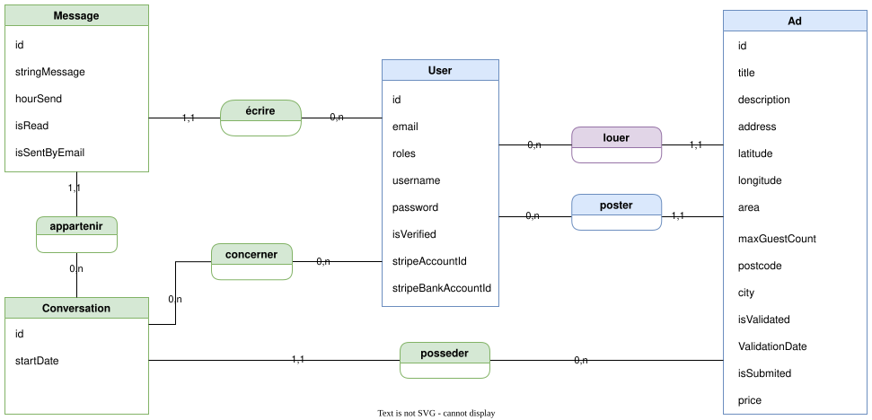
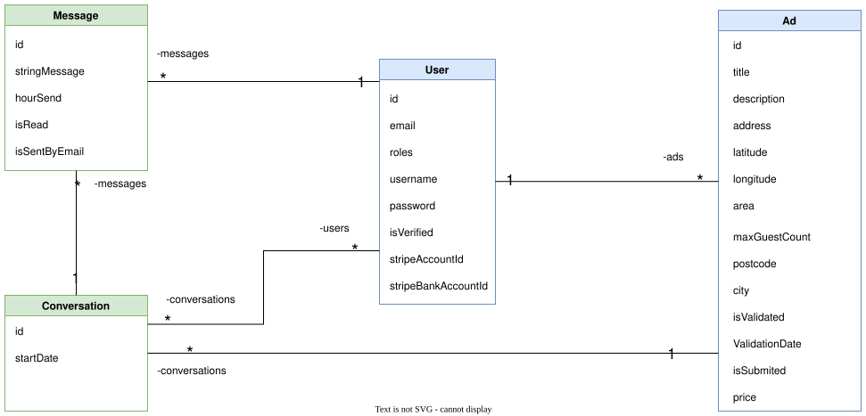

J'ai réalisé ce premier stage chez Digitalusor, une entreprise de prestations informatiques (web/application) de moins de 5 employés située à Saint-Nazaire.
Durant la totalité de mon stage, j'ai participé au projet "Garden Party", une plateforme web de location de jardins destinée aux particuliers et aux professionnels dans le but d'organiser des réceptions (mariages, fêtes, banquets).
Ce projet était une commande d'une start-up.
Le site était en développement lorsque j'ai débuté ce stage et une partie des fonctionnalités était entamée.
La première mission qui m'a été confiée était d'ajouter sur le projet un système de tchat permettant aux utilisateurs de discuter sur la plateforme. Cette tâche a été la plus longue (un peu moins de 5 semaines).
La seconde mission qui m'a été confiée fut la mise en place de paiement en ligne grâce à l'API Stripe.
La première partie du travail a été de comprendre l'arborescence des fichiers du projet Symfony et de leurs contenus.
J'ai créé mon MCD (modèle conceptuel de données), puis je l'ai amélioré durant mon stage.
Note : le projet contenait des entités que je n'ai pas utilisé donc elles ne sont pas incluses dans le MCD ci-dessous.


J'ai développé cette fonctionnalité en ayant des réunions de concertations régulières avec mon superviseur afin de faire le point aux différentes étapes du projet.
Le système a pour but de mettre en relation les potentiels clients avec les annonceurs (propriétaire de jardin).
Cheminement pour accéder au tchat :Une fois que le potentiel client est intéressé par une annonce, il lui est possible de cliquer sur le bouton "contacter" afin de créer une conversation avec le propriétaire de l'annonce pour obtenir des informations complémentaires.
Ensuite, les utilisateurs (client et propriétaire) peuvent écrire et envoyer des messages grâce à la méthode asynchrone AJAX (AJAX permet de communiquer avec le serveur à l'aide de code JavaScript en arrière-plan pendant que la page est affichée à l'écran) ce qui a l'avantage d'apporter de l'interactivité avec la page sans avoir à la recharger.
Les utilisateurs (client et propriétaire) peuvent également recevoir les messages en temps réel toujours via une méthode asynchrone AJAX qui s'exécute continuellement sur l'environnement client.
Après avoir finalisé le système de conversation, j'ai développé un service de mailing (envoie de mails automatiques) qui s'exécute dans les deux cas suivants :
En parallèle, j'ai mis en place un cron sur le serveur permettant d'exécuter un script toutes les heures. Celui-ci envoie un email aux utilisateurs ayant de nouveaux messages non-lus.
Cette deuxième mission avait pour but de mettre en place la réservation et le paiement des annonces à l'aide de l'API (Application Programming Interface) de paiements en ligne Stripe en PHP. Dans cette première version, le système de paiement permet à un utilisateur de rentrer ses coordonnées bancaires, ensuite les fonds sont redirigés sur le compte Stripe de "Garden Party". Stripe et "Garden Party" prennent leurs commissions, enfin, les fonds restant sont virés sur le compte Stripe du propriétaire de l'annonce. Je n'ai pu finaliser cette tâche au cours de mon stage par contrainte de temps.
Pour conclure, je dirais que je suis extrêmement satisfait de ce stage, mon superviseur était très clair dans ses explications, il m'a permis de mieux comprendre certains concepts comme le Modèle Vue Contrôleur avec le framework Symfony notamment et de découvrir l'asynchrone. Ce stage m'a permis également de développer mes compétences générales de programmation en milieu professionnel et de travailler au sein d'une équipe.